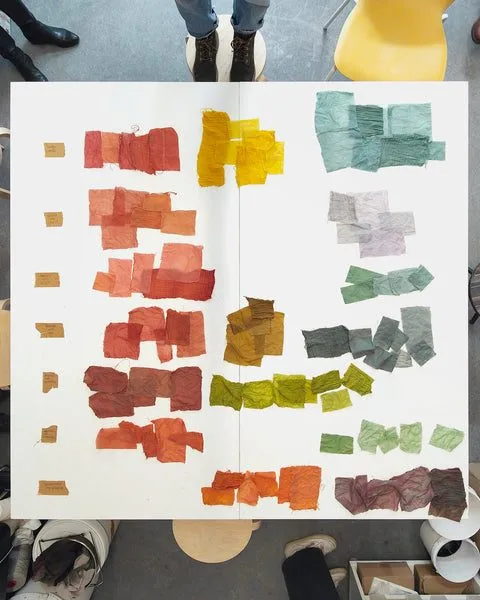
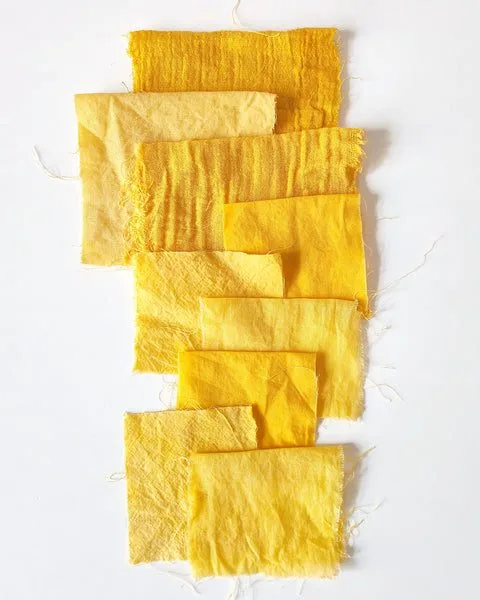
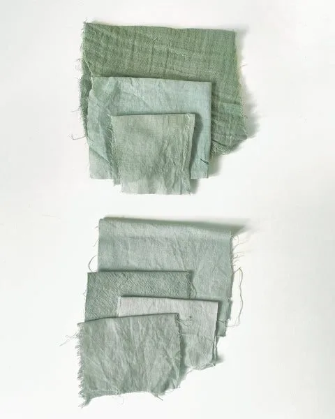
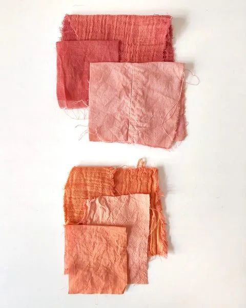
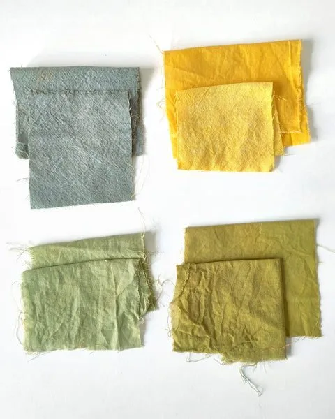

I recently ran another plant dyeing workshop in Berlin. We got together to play with three different dye plants and see how many colors we could pull out of them, using some of the tricks I share with participants.
Here's a roundup of the samples laid out on the workshop table after a couple of hours of experimenting.

My extended color palette
Using different fibers
Plant dyes turn out differently, depending on what kind of fibers you use them on. As a general rule, wool and silk take up the color much better than cotton, and linen usually yields the palest results. This means that just by choosing different base materials, you can get a range of shades from a single dye bath — without changing anything else about your process.
For example, when we used chamomile in the workshop, the wool samples came out a deep, warm golden-yellow, while the linen barely picked up any color at all. The cotton was somewhere in between. Just with that one variation, we already had three different shades sitting side by side.

Modifying with mordants
Mordants are substances that help the dye bond to the fiber — but they also affect the final color. Alum, one of the most common mordants, tends to brighten and clarify plant dyes. Iron, on the other hand, saddens or deepens colors, shifting them towards greens, grays, and cool earthy tones.
We used iron as a modifier at the end of the dye bath, and the results were dramatic. A soft lavender-pink from hollyhock turned into a dusty mauve-gray. A warm yellow from chamomile became a cool, muted olive. With just one modifier, every dye plant offered a completely different color story.

Changing pH levels
Many natural dyes are sensitive to changes in pH, and you can use this to your advantage. Adding a small amount of vinegar (which is acidic) or baking soda (which is alkaline) to the dye bath or in a rinse can shift the color noticeably — sometimes towards warm pinks and oranges, sometimes towards cooler purples and greens.
With madder root, our acidic rinse pulled the color towards a brighter, more orange-red, while the alkaline rinse pushed it into a softer, bluer rose. What started as one dye plant became four distinct shades when we combined both pH variations with and without iron mordant.

Over-dyeing
Over-dyeing is exactly what it sounds like: you dye a piece of fabric twice, using two different plants. The colors mix and blend within the fibers, creating entirely new shades that you couldn't achieve with either dye alone. It's one of my favorite ways to extend a palette.
In the workshop, we layered chamomile (which gives warm yellows) over hollyhock (which gives pinks and lavenders). The result was a range of soft sage greens, dusty terracotta tones, and muted ochres — none of which appeared in either single dye bath. Depending on which color you apply first and how long each dip lasts, the results shift again.

One more way of controlling the color is changing the intensity of the dye bath — using more plant material gives a deeper, more saturated shade, while a weaker bath produces pale, faded tones. When you combine all these variables — fiber type, mordant, pH, layering, and concentration — three plants really can give you sixteen colors, or more.
If you'd like to try this for yourself, the easiest way in is to gather a few friends and book a private workshop. I run small, hands-on sessions in Berlin and would love to see what colors you can coax out of the plants.